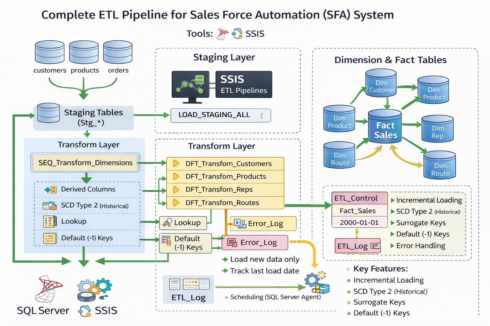

01Data warehousing
SFA Data Warehouse (SSIS)
Designed and implemented a scalable Sales Force Automation (SFA) data warehouse using SQL Server and SSIS. Built end-to-end ETL pipelines to integrate, cleanse, and transform data into a star schema, incorporating incremental loading and SCD Type 2 for historical tracking and accurate analytics.